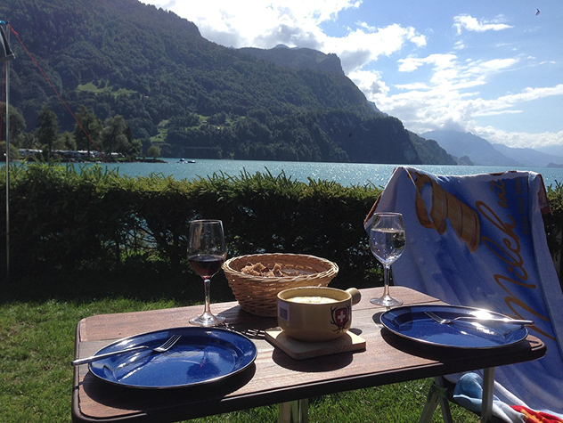

Ruokailu
Leirintäkeskuksen päärakennuksessa on oma ravintola sekä tilausravintolapuoli. Ravintola Taival tarjoaa joka aamu monipuolisen aamiaisen yöpyjille hintaan 8 € aikuisille ja 4 € kouluikäisille lapsille. Nuoremmat saavat ruokailla huoltajien kanssa ilmaiseksi. Aamiaista tarjotaan kello 7-10.
Kesäkaudella ravintolamme tarjoaa maukkaan ja kesäisen lounaan kello 11-14 noutopöydästä. Otamme huomioon yleisimmät ruokarajoitukset. Kysy harvinaisemmista allergeeneistä henkilökunnaltamme. Lounaan hinta on 12,90 € aikuisilta, 8,90 € kouluikäisiltä lapsilta ja 4,90 € alle kouluikäisiltä lapsilta
Kesäkaudella ravintolamme tarjoaa myös illallista noutopöydästä kello 17-20. Illallisen hinta on 14,90 € aikuisilta, 9,90 € kouluikäisiltä ja 4,90 € alle kouluikäisiltä lapsilta.
Muina aikoina ruokailun voi tilata vähintään kuuden hengen ryhmille ruokalistamme mukaisesti. Tilaus tulee tehdä vähintään kolme vuorokautta aikaisemmin. Meiltä saa myös kaikkiin tiloissamme pidettäviin juhliin pitopalvelun.
